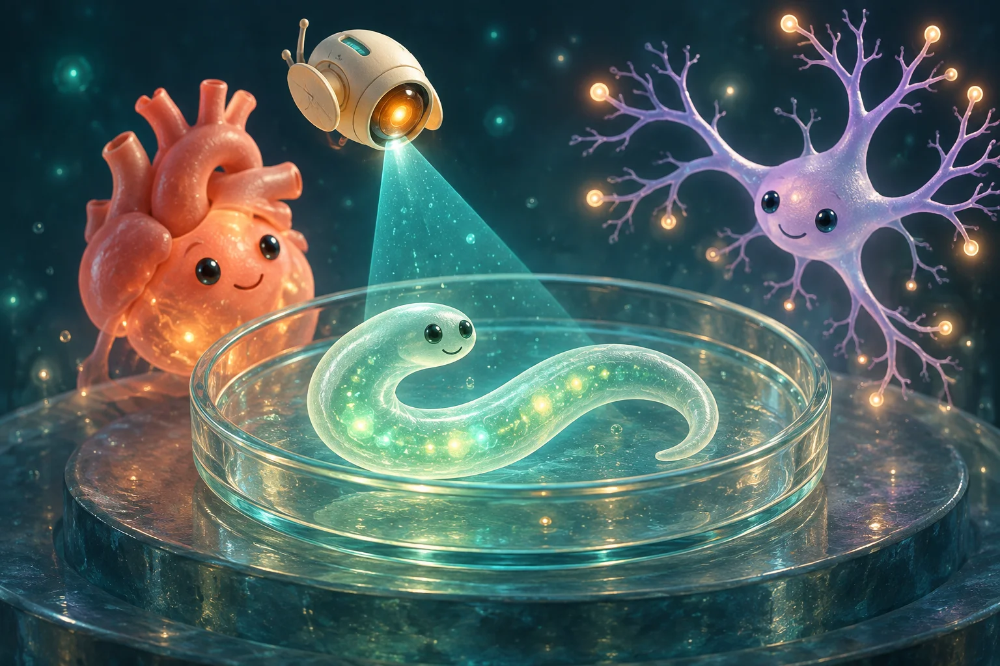

Pequenas luzes.
Grandes descobertas.
Uma célula. Um pulso de luz. Um mundo de possibilidades. Entre no laboratório e descubra a optogenética jogando.
Mouse, toque ou teclado

Onde vamos acender a luz?
A luz não faz tudo sozinha. A resposta depende da proteína, da célula e do circuito. Cada missão revela uma parte dessa história.
Experimente.
Depois, conecte as ideias.
A ciência fica disponível desde o início. Complete missões para carimbar suas descobertas.
A optogenética combina a expressão de proteínas sensíveis à luz com iluminação de células selecionadas. ChR2 é um canal de cátions: sua ativação costuma favorecer a despolarização. NpHR é uma bomba de cloreto que pode reduzir a excitabilidade. A resposta depende das condições experimentais.
Um modelo para aprender
Personagens, cores dos organismos, coleta de itens, energia, tempos e pontuações são recursos de jogo. As curvas guiadas e as imagens da retina são simplificações, não simulações quantitativas. Uma célula excitada pode inibir outras: o efeito celular não é igual ao efeito no comportamento. As aplicações cardíacas e motoras apresentadas vêm de pesquisa experimental; a missão de visão se inspira em um estudo clínico específico, não em uma promessa de recuperação completa.
Concepção dos jogos originais: Helder Nakaya. Esta versão combina e amplia suas mecânicas, com arte de personagens gerada por IA.